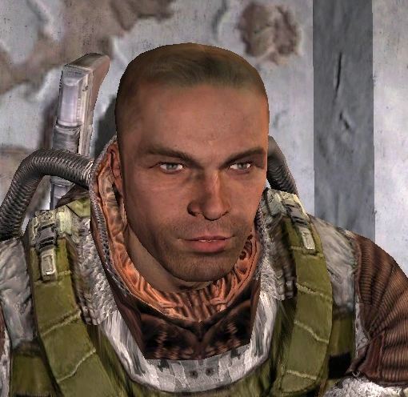
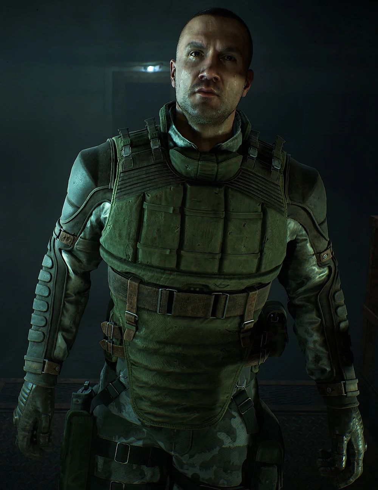

Бродяга
Хто це?
Бродяга — колишній боєць угруповання «Моноліт» та засновник «Полудня».
Передісторія
Про минуле Бродяги нічого не відомо крім того що він колишній монолвтівець
Бродяга в різних частинах S.T.A.L.K.E.R.
Бродяга в «S.T.A.L.K.E.R.: Поклик Прип'яті»
Після знищення пульту керування Монолітом до нього і його групи повернулася можливість вільно мислити. Під час зустрічі в околицях «Юпітера» він просить Дегтярьова знайти притулок для його групи від викидів і мутантів, але це можливо лише в тому випадку, якщо його загін долучиться до угруповання «Долг» або «Воля» (на вибір гравця). Після цього Бродягу можна взяти із собою для походу до Прип'яті.
Хороша кінцівка
У Зоні з’явилася нова група сталкерів. Підготовлені вони добре, та їхні цілі нікому не відомі. За непідтвердженими чутками, усі ці люди колись були бійцями «Моноліту». Лідер загону відомий під прізвиськом Бродяга.
Погана кінцівка
Мало хто помітив зникнення Бродяги — єдиної людини, яка намагалася зрозуміти, що сталося із «монолітівцями», та допомогти їм.

Бродяга в «S.T.A.L.K.E.R.: Серце Чорнобиля»
Через деякий час після подій у Прип'яті, Бродяга заснував угрупування Полудень, у яке зібрав колишніх монолітівців. Він створив базу Полудня на Дикому острові. Коли Скіф, головний герой гри, прибуває на острів, він виявляється втягнутим у нові таємниці Зони.
